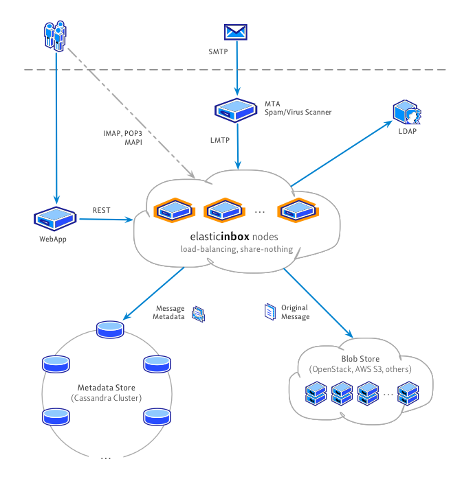

ElasticInbox is an open-source, reliable, distributed, scalable email store.
The goal of this project is to provide a highly available email store without a single point of failure that can run on commodity hardware and scale linearly. ElasticInbox can easily scale to millions of mailboxes, with hundreds of thousands of messages in each mailbox.
To achieve this, ElasticInbox relies on proven technologies:
ElasticInbox is an open-source project distributed under BSD license.
The message read and write throughput scales linearly as more nodes are added.
Underlying components - Cassandra and Blob Stores also can scale linearly to thousands of nodes.
ElasticInbox itself was designed with "share-nothing" architecture in mind where every node is independent. This means no single point of failure.
Cassandra and Blob Stores are also decentralized.
ElasticInbox stores information in Cassandra and Blob stores. Both technologies provide automatic replication to multiple nodes. Both support replication across multiple data centres. Failed nodes, whether it's ElasticInbox, Cassandra or Blob store, can be replaced with no downtime.
The diagram below depicts high-level architecture:

The typical email delivery process involves several components:
MDA is responsible for storing messages. Most of the existing MDAs (or sometimes MTAs) store messages only on the locally mounted filesystem which is sufficient when you have a few thousands of accounts. However, when you need to serve millions of accounts, a local filesystem is not an option.
ElasticInbox MDA can serve millions of accounts and scale linearly - no bottlenecks, no single point of failure. Multiple replicas provide fault tolerance. This is a perfect solution for the cloud environment - just add more nodes as you grow. Messages are delivered over the standard LMTP protocol.
In addition to MDA, ElasticInbox also supports RESTful APIs for managing, retrieving and storing messages. It provides an easy way for building web services (such as webmail, admin panel, etc.) on top of ElasticInbox.
POP3 is supported for mailbox access and we also plan to add support for IMAP. See the roadmap for the full list of planned features.
Latest version is 0.4.0-SNAPSHOT (beta quality, although used in production):
The source code is available on GitHub. Fork, make your changes and contribute. We accept pull requests.
To build and run from the source you will need Maven 3 and Git:
% git clone git://github.com/elasticinbox/elasticinbox.git elasticinbox % cd elasticinbox % mvn clean install pax:provision -DskipITs
If you have questions regarding ElasticInbox functionality, configuration or operation, join the user mail list:
Stay in touch, follow us on twitter and github: